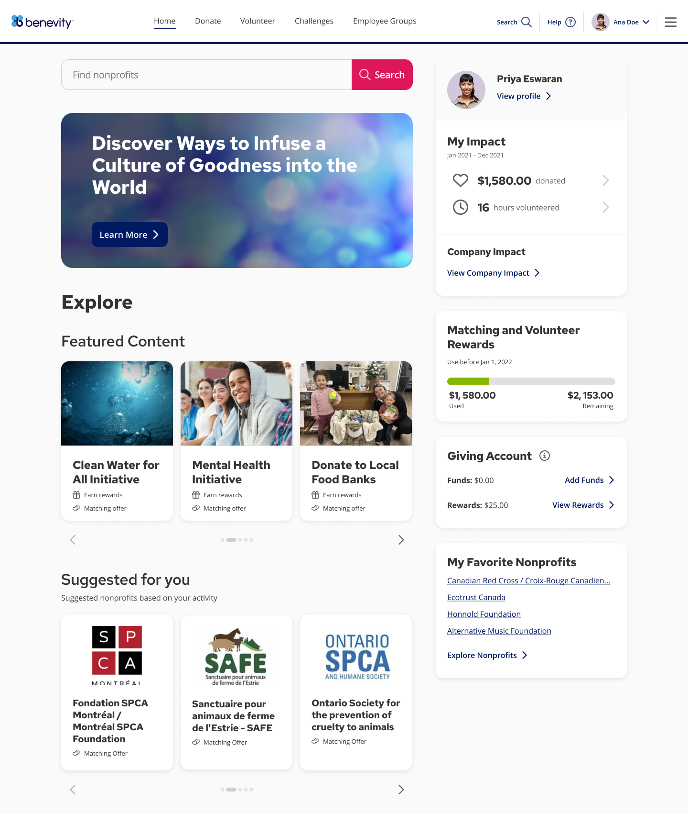

Context
Benevity is a social-impact B2B SaaS platform offering end-to-end solutions for companies to manage employee donations, volunteering, grants and more — supporting thousands of registered nonprofit organizations.
The "Suggested for You" feature is an experimental addition to the homepage, powered by a machine-learning model trained to deliver personalized content to users. It helps people discover and engage with nonprofits similar to those they've recently donated to — deepening their impact and their experience on the platform.
My role
I led research, delivery and iterative development across multiple experimental phases, working closely with the product triad — Product Manager and technical lead — from first hypothesis to production rollout.
Problem to solve
Engagement with homepage content was low, and there was a clear business need to increase nonprofit discoverability and drive traffic to other parts of the platform.
Expected outcome
With this beta we aimed to move the CTR baseline of 13%, and to understand how users felt about the new section: did it make them feel more engaged? Did the recommendations feel relevant? Did people discover — and donate to — nonprofits they didn't know before?
Discovery process
The project began with a discovery phase — interviewing 20 people across several companies and analysing quantitative data from the platform's homepage. We ran the experiment in two phases:
- Alpha version: we queried the database for the top 3 most-contributed causes, selected 100 users per company across 4 companies, and invited them by email to explore the new feature — tracking the full journey from email open through on-platform click-through.
- Beta version: we trained a machine-learning model to generate personalized suggestions based on user and company activity, location and other signals. It's now live in production for 10 clients.
Main user insights
- Users tend to engage most with causes that align closely with their personal interests.
- Users prefer recommendations to appear in the same section as the cause, even when it doesn't match their personal location.
- Timing matters — suggestions should prioritize recent user actions for greater relevance.


Achievements
- Successfully launched Benevity's first AI-powered model.
- Received positive feedback from users.
- Planned for general availability across the entire client ecosystem.